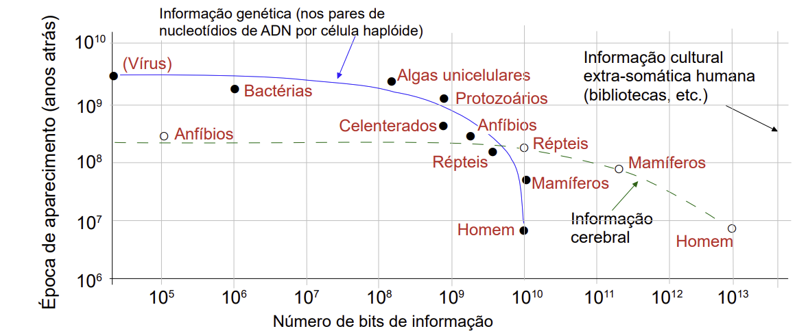
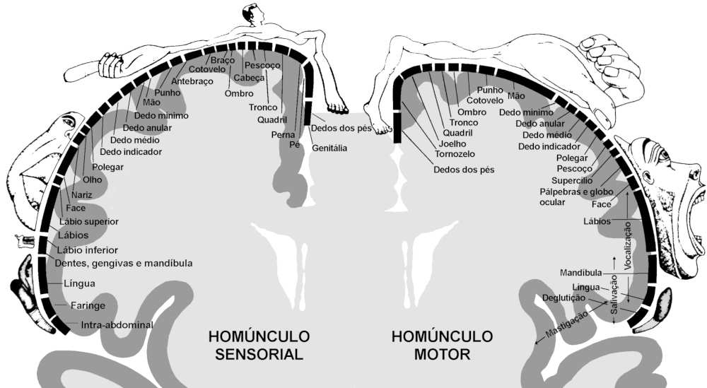
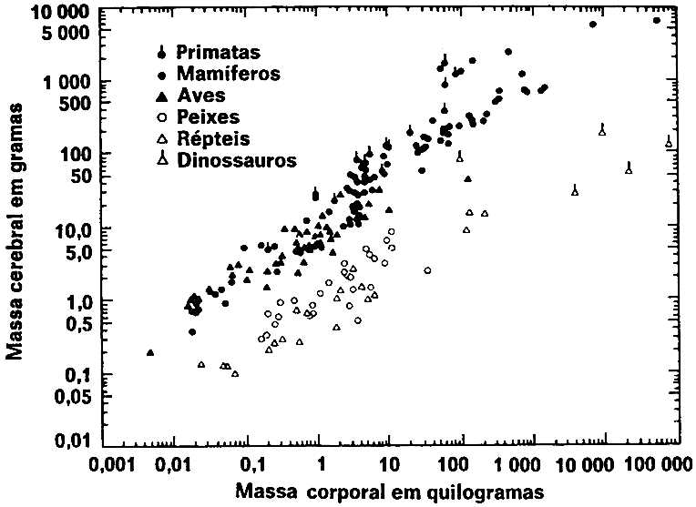
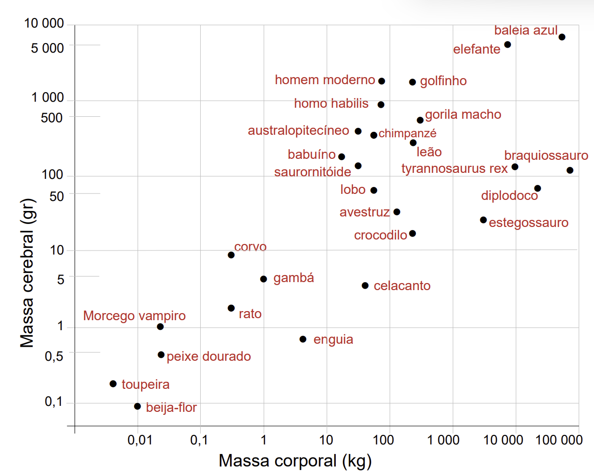

A evolução biológica tem sido acompanhada de crescente complexidade. Os mais complexos organismos da Terra hoje contêm consideravelmente mais informação armazenada, tanto genética quanto extragenética*, do que os mais complexos organismos de, digamos, 200 milhões de anos atrás — que representam somente cinco por cento da vida no planeta, ou seja, cinco dias atrás no Calendário Cósmico. Os mais simples organismos da Terra hoje possuem tanta história evolutiva atrás de si quanto o mais complexo dele, e é perfeitamente possível que a bioquímica interna das bactérias contemporâneas seja mais eficiente do que a bioquímica interna das bactérias de 3 bilhões de anos atrás. Mas a quantidade de informação genética das bactérias atuais provavelmente não é maior do que a de seus ancestrais bacterianos arcaicos. É importante distinguir entre a quantidade de informação e a qualidade dessa informação.
As diversas formas de vida classificam-se em grupos de amplitude crescente. As maiores divisões taxonômicas fazem distinção entre as plantas e os animais ou entre os organismos portadores de núcleos pouco desenvolvidos em suas células (como as bactérias e as algas verde-azuladas) e os que têm núcleos nitidamente demarcados e elaboradamente arquitetados (como os protozoários e os seres humanos). Todos os organismos do planeta Terra, entretanto, tenham ou não núcleos bem definidos, possuem cromossomas, que contêm o material genético passado de geração a geração. Em todos os organismos, as moléculas hereditárias são constituídas por ácidos nucleicos*. Com algumas exceções sem importância, o ácido hereditário é sempre a molécula conhecida como ADN* (ácido desoxirribonucleico). Há outras divisões subsequentes entre vários tipos de plantas e animais, chegando às espécies, subespécies e raças.
Uma espécie é um grupo capaz de produzir prole fértil através de cruzamento com outros membros da própria espécie, mas não de outras. O acasalamento de gerações diferentes de cães produz filhotes que, quando crescidos, serão cães competentes sob o ponto de vista reprodutor. Mas os cruzamentos entre espécies — mesmo quando semelhantes, como é o caso dos burros e cavalos — produzem prole estéril (nesse caso, as mulas). Os burros e cavalos são, portanto, classificados como espécies diferentes. Acasalamentos viáveis, mas estéreis, de espécies mais separadas — leões e tigres, por exemplo — por vezes ocorrem e se, por um raro acaso, a prole for fértil, isso só indica que a definição da espécie é um tanto confusa.
Todos os seres humanos são membros da mesma espécie, Homo sapiens, que significa no latim mais otimista "Homem, o sábio". Nossos prováveis ancestrais, o Homo erectus e o Homo habilis — agora extintos —, são classificados no mesmo gênero (Homo), mas em espécie diferente, embora ninguém (pelo menos nos últimos tempos) tenha tentado as experiências adequadas para observar se o cruzamento deles conosco produziria uma prole fértil.
Outrora se acreditava piamente que cruzamentos entre organismos extremamente diferentes poderiam gerar prole. O Minotauro, morto por Teseu, era tido como resultado de um cruzamento entre um touro e uma mulher. O historiador romano Plínio sugeriu que o avestruz, então recém-descoberto, resultava do cruzamento entre a girafa e o mosquito. (Teria de ser, suponho, uma girafa fêmea e um mosquito macho.) Na prática, devem existir muitos cruzamentos não tentados em vista de uma compreensível falta de motivação.
O próximo gráfico deste capítulo será repetidamente mencionado no seu decorrer. A curva contínua mostra as épocas da emergência de diversas formas de vida importantes. Naturalmente que existem muitas outras formas que não foram assinaladas nos poucos pontos da figura. Mas a curva é representativa de uma série muito maior de pontos que seriam necessários para caracterizar as dezenas de formas separadas que surgiram durante a história da vida em nosso planeta. As principais formas que evoluíram mais recentemente são, sem sombra de dúvida, as mais complicadas.
Uma certa noção da complexidade de um organismo pode ser obtida simplesmente ao se considerar seu comportamento — ou seja, o número de diferentes funções que é intimado a desempenhar no decurso de sua vida. Mas a complexidade também pode ser avaliada em termos do conteúdo mínimo de informação no material genético do organismo. Um cromossoma humano típico possui apenas uma molécula de ADN*, muito longa e que se enrola, de forma que o espaço ocupado é muito menor do que seria, não fosse a forma espiralada. Essa molécula de ADN* é composta de blocos menores, um pouco semelhante aos degraus e lados de uma escada de corda. Esses blocos são chamados nucleotídios* e comportam quatro variedades. A linguagem da vida, nossa informação hereditária, é determinada pela sequência dos quatro tipos diferentes de nucleotídios. Podemos dizer que a linguagem da hereditariedade é escrita com um alfabeto de apenas quatro letras.
Mas o livro da vida é muito rico; uma molécula típica de ADN* cromossômico do ser humano é constituída de cerca de 5 bilhões de pares de nucleotídios. As instruções genéticas de todas as outras formas de vida da Terra são escritas na mesma língua, usando o mesmo código. Na realidade, essa linguagem genética comum a todas as espécies constitui um ponto de apoio à teoria de que todos os organismos da Terra descendem de um único ancestral, situando a origem da vida a cerca de uns 4 bilhões de anos.
A informação contida em qualquer mensagem é geralmente descrita em unidades chamadas bits*, a abreviação de binary digits (dígitos binários). O esquema aritmético mais simples não usa dez dígitos (como nós fazemos em virtude do acidente evolutivo de possuirmos dez dedos), mas apenas dois, o 0 e o 1. Dessa forma, qualquer pergunta suficientemente objetiva pode ser respondida por um único dígito 0 ou 1, sim ou não. Se o código genético fosse escrito numa língua de duas letras em vez de quatro, o número de bits* em uma molécula de ADN* equivaleria ao dobro do número de pares de nucleotídios. Mas, em vista de existirem quatro tipos diferentes de nucleotídios, o número de bits* de informação no ADN* é quatro vezes o número de pares de nucleotídios. Por conseguinte, se um único cromossoma possui 5 bilhões (5 × 109) de nucleotídios, ele contém 20 bilhões (2 × 1010) de bits* de informação. (Um símbolo como 109 indica simplesmente o número 1 seguido por certo número de zeros — nove, neste caso.)
Qual a quantidade de informação de 20 bilhões de bits*? A que equivaleria se fosse escrita em um livro comum impresso em linguagem humana moderna? Os alfabetos das línguas existentes possuem, caracteristicamente, de vinte a quarenta letras e mais uma ou duas dúzias de numerais e sinais de pontuação, portanto, 64 caracteres alternativos devem ser suficientes para a maior parte dessas línguas. Uma vez que 26 equivale a 64 (2 × 2 × 2 × 2 × 2 × 2), não devem ser necessários mais de seis bits* para especificar um determinado caractere. Podemos imaginar um tipo de jogo de vinte perguntas, no qual cada resposta corresponde ao investimento de um único bit, a uma pergunta com resposta sim/não. Suponha que o caractere em questão seja a letra J. Podemos especificá-la assim:
PRIMEIRA PERGUNTA: É uma letra (0) ou outro tipo de caractere
(1)?
RESPOSTA: Uma letra (0).
SEGUNDA PERGUNTA: Fica na primeira metade (0) ou na segunda
metade do alfabeto (1)?
RESPOSTA: Na primeira
metade (0).
TERCEIRA PERGUNTA: Das treze letras da primeira metade do
alfabeto, está nas primeiras sete (0) ou nas seis finais (1)?
RESPOSTA: Nas seis finais (1).
QUARTA PERGUNTA: Das seis finais (H, I, J, K, L, M), situa-se
na primeira metade (0) ou na segunda metade (1)?
RESPOSTA: Na primeira metade (0).
QUINTA PERGUNTA: Das seguintes letras H, I, J, é o H (0) ou
uma das outras duas (1)?
RESPOSTA: É uma das
outras duas (1).
SEXTA PERGUNTA: É o I (0) ou J (1)?
RESPOSTA: É o J (1).
Especificar a letra J, portanto, corresponde à mensagem binária 001011. Não foram necessárias vinte perguntas, mas apenas seis, e é nesse sentido que são necessários somente seis bits* para determinar uma certa letra. Por conseguinte, 20 bilhões de bits* equivalem a cerca de 3 bilhões de letras (2 × 1010 / 6 ≈ 3 × 109). Se existem aproximadamente seis letras em uma palavra média, o conteúdo de informação de um cromossomo humano corresponde a cerca de 500 milhões de palavras (3 × 109 / 6 = 5 × 108). Se existem cerca de trezentas palavras em uma página impressa comum, isso corresponde a mais ou menos 21 milhões de páginas (5 × 108 / 3 × 102 ≈ 2 × 106). Se um livro comum contém quinhentas páginas desse tipo, o conteúdo de informação de um único cromossomo humano corresponde a uns 4 000 volumes (2 × 106 / 5 × 102 = 4 × 103). Fica claro então que a sequência de degraus de nossas escadas de ADN* representa uma enorme biblioteca de informação. É igualmente lógico que há necessidade de uma biblioteca tão rica para especificar um objeto construído de modo tão estranho e que funciona de modo tão intrincado como o ser humano. Os organismos simples têm menos complexidade e menos o que fazer e, portanto, necessitam de menor quantidade de informação genética. As sondas Viking, lançadas a Marte em 1976, tinham instruções programadas em seus computadores chegando a alguns milhões de bits*. Assim, a Viking possuía ligeiramente mais "informação genética" que uma bactéria, mas consideravelmente menos que uma alga.
O gráfico seguinte também mostra a quantidade mínima de informação genética no ADN* de diversas formas de vida. A quantidade mostrada para os mamíferos é menor do que a dos seres humanos, pois a maioria dos mamíferos possui menos informação genética do que os seres humanos. Dentro de certas divisões taxonômicas — os anfibios, por exemplo —, a quantidade de informação genética varia amplamente de espécie para espécie e acredita-se que grande parte desse ADN* seja redundante ou destituída de função. Esse é o motivo pelo qual o gráfico exibe a quantidade mínima de ADN* para determinada forma de vida.
[Gráfico: Evolução do conteúdo de informação nos genes e nos cérebros no evolver da história da vida na Terra. A curva cheia, acompanhada dos pontos cheios, representa o número de bits* de informação contido nos genes de diversas divisões taxonômicas, cuja época aproximada de origem no registro geológico também é apresentada. Em virtude de variações na quantidade de ADN* por célula para determinadas divisões taxonômicas, mostramos somente o conteúdo do mínimo de informação para determinada divisão; os dados foram extraídos do trabalho de Britten e Davidson (1969). A curva pontilhada, acompanhada dos pontos vazados, é uma estimativa aproximada da evolução da quantidade de informação nos cérebros e nos sistemas nervosos desses animais. A informação nos cérebros de anfíbios e de animais ainda inferiores situa-se fora da margem esquerda da figura. O número de bits* de informação contido no material genético dos vírus é apresentado, mas não se sabe ao certo se os vírus tiveram origem há vários bilhões de anos. É possível que tenham surgido mais recentemente, através da perda de função de bactérias ou outros organismos mais elaborados. Caso fosse incluída a informação extra-somática* dos seres humanos (bibliotecas, etc.), esse ponto situar-se-ia muito além da borda direita do gráfico.
Vemos pelo gráfico que houve uma acentuada melhora no conteúdo de informação dos organismos que habitavam a Terra há uns 3 bilhões de anos e um lento aumento de informação genética daí por diante. Também vemos que se mais de algumas dezenas de bilhões de bits* (várias vezes 1010) de informação são necessárias para a sobrevivência humana, os sistemas extragenéticos* terão de fornecê-los: o índice de desenvolvimento de sistemas genéticos é tão lento que não se pode buscar qualquer fonte de tal informação biológica adicional no ADN*.
A matéria-prima da evolução são as mutações*, alterações herdáveis, nas sequências de nucleotídios* que determinam as instruções hereditárias na molécula de ADN*. As mutações* são causadas pela radiatividade ambiente, pelos raios cósmicos vindos do espaço, ou, como frequentemente ocorre, ao acaso — por rearranjos espontâneos dos nucleotídios* que estatisticamente têm de ocorrer esporadicamente. As ligações químicas se desfazem espontaneamente. As mutações* também são, até certo ponto, controladas pelo próprio organismo. Este tem a capacidade de corrigir certos tipos de danos estruturais ocorridos no ADN*. Existem, por exemplo, moléculas que vigiam o ADN* no tocante a lesões; quando determinada alteração flagrante no ADN* é descoberta, ela é cortada por uma espécie de tesoura molecular e o ADN* é reconstituído corretamente. Mas esses consertos não são e não devem ser totalmente eficientes: as mutações* são necessárias para a evolução. Uma mutação que ocorre em uma molécula de ADN* de um cromossoma de uma célula da pele de meu dedo indicador não influi sobre a hereditariedade. Os dedos não estão implicados, pelo menos diretamente, na propagação da espécie. O que conta são as mutações* nos gametas* — óvulos e espermatozoides — que representam os agentes de reprodução sexual.
As mutações* acidentais úteis proporcionam material de trabalho para a evolução biológica como, por exemplo, uma mutação da melanina em certas traças, que muda sua cor do branco para o preto. Essas traças comumente repousam sobre bétulas inglesas nas quais sua coloração branca proporciona camuflagem protetora. Sob tais condições, a mutação melanínica não constituiu uma vantagem — as traças escuras são perfeitamente visíveis e devoradas por pássaros; a mutação seleciona desfavoravelmente. Mas quando a Revolução Industrial veio cobrir a casca das bétulas com fuligem, a situação foi revertida e somente as traças com a mutação melanínica sobreviveram. Então a mutação é selecionada favoravelmente e dentro de certo tempo quase todas as traças eram escuras, passando essa transformação hereditária para as gerações futuras. Existem ainda mutações* inversas eventuais que eliminam a adaptação da melanina, e que seriam benéficas para as traças se a poluição industrial fosse controlada. Observe-se que em toda essa interação entre a mutação e a seleção natural*, a traça não faz um esforço consciente para se adaptar ao ambiente transformado. O processo se fez ao acaso e de forma estatística.
Os organismos grandes como os seres humanos apresentam, em média, uma mutação para cada dez gametas* — ou seja, existe a probabilidade de 10 por cento de que qualquer espermatozoide ou óvulo produzido possua uma alteração nova e hereditária nas instruções genéticas que determinam a formação da geração seguinte. Essas mutações* ocorrem ao acaso e são quase uniformemente deletérias — é raro que uma máquina de precisão seja aperfeiçoada por uma alteração aleatória nas instruções de sua fabricação.
Tais mutações*, em sua maioria, também são recessivas — elas não se manifestam imediatamente. Contudo, já existe um índice de mutação tão elevado que, como diversos biólogos sugeriram, um complemento maior de ADN* genético acarretaria índices inaceitavelmente altos de mutação: ocorreriam demasiados erros com grande frequência se tivéssemos mais genes2. Se isso é verdadeiro, é preciso que haja um limite superior prático para a quantidade de informação genética que o ADN* dos organismos maiores pode acomodar. Por conseguinte, os organismos grandes e complexos, pelo simples fato de existirem, têm de contar com recursos substanciais de informação extragenética*. Essa informação está contida, em todos os animais superiores, à exceção do homem, quase que exclusivamente no cérebro.
Qual é o conteúdo de informação do cérebro? Consideremos dois pólos opostos e extremos de opinião sobre a função cerebral. Sob um ponto de vista, o cérebro, ou pelo menos suas camadas externas, o córtex cerebral*, é equipotente*: qualquer parte sua pode ser substituída por outra qualquer, e não há localização de função*. Sob outro ponto de vista, o cérebro é completamente interligado: as funções cognitivas específicas localizam-se em determinados locais no cérebro. O esquema do computador sugere que a realidade se encontra em algum ponto entre esses dois extremos. Por um lado, qualquer visão não-mística da função cerebral deve estabelecer a conexão da fisiologia com a anatomia; determinadas funções cerebrais devem estar ligadas a determinados padrões neurais ou outra arquitetura cerebral. Por outro lado, para garantir a precisão e para proteger contra acidentes, esperaríamos que a seleção natural* elaborasse considerável redundância na função cerebral. Isso também é esperado de acordo com a via evolutiva mais provável do cérebro.
A redundância do armazenamento da memória foi claramente demonstrada por Karl Lashley, um neuropsiquiatra de Harvard que extirpou cirurgicamente frações consideráveis do córtex cerebral* de ratos sem afetar praticamente a memória do comportamento, anteriormente aprendido, de percorrer labirintos. A partir dessa experiência, torna-se claro que a mesma lembrança deve localizar-se em muitos pontos diferentes do cérebro, e agora sabemos que algumas lembranças são transmitidas de um hemisfério cerebral para outro através de um conduto denominado corpo caloso*.
Lashley também relatou a ausência de mudança aparente no comportamento geral de um rato quando consideráveis frações — digamos, 10 por cento — de seu cérebro foram extirpadas. Mas ninguém perguntou ao rato sua opinião. A pesquisa adequada desse aspecto exigiria um estudo pormenorizado do comportamento social, alimentar e predatório do rato. Existem muitas mudanças de comportamento cabíveis resultantes de tais extirpações que poderiam não ser imediatamente evidentes para o cientista despreocupado, mas que poderiam ter considerável importância para o rato — tal como a quantidade de interesse, após a extirpação*, provocado por uma rata atraente, ou o grau de indiferença manifestado ante a presença de um gato à espreita3.
Questiona-se às vezes se a seção ou se lesões em partes importantes do córtex cerebral do homem — como é o caso da lobotomia* pré-frontal bilateral cirúrgica ou por acidente — exercem pouco efeito sobre o comportamento. Acontece que algumas espécies de comportamento humano não são muito aparentes do ponto de vista externo, ou mesmo interno. Existem percepções e atividades humanas que podem ocorrer apenas raramente, tal como a criatividade. A associação de ideias envolvidas em atos — mesmo os pequenos de caráter criativo — parece implicar substanciais investimentos dos recursos cerebrais. Esses atos criativos, na verdade, caracterizam toda a nossa civilização e a humanidade como espécie. Contudo, em muitas pessoas eles só ocorrem raramente e sua ausência pode passar despercebida pelo indivíduo lesado e pelo médico pesquisador.
Muito embora seja inevitável uma considerável redundância na função cerebral, pode-se dizer quase com certeza que a hipótese da equipotência* está errada e quase todos os neurofisiologistas contemporâneos a rejeitam. Por outro lado, uma hipótese de equipotência* atenuada — a qual sustenta, por exemplo, que a memória é uma função do córtex cerebral* como um todo — não é tão prontamente descartada, embora esteja sujeita a verificação, como veremos adiante.
Existe uma crença popular de que metade (ou mais) do cérebro não é utilizada. Do ponto de vista evolutivo, isso seria absolutamente extraordinário: por que teria evoluído se não tivesse função? Na verdade, a afirmação é feita com muito pouca base. Também aqui, a dedução resulta do fato de muitas lesões cerebrais, geralmente do córtex, não traduzirem efeito visível sobre o comportamento. Esse ponto de vista não leva em consideração (1) a possibilidade de função redundante; e (2) o fato de que alguns aspectos do comportamento humano são sutis. Por exemplo, as lesões do hemisfério direito do córtex cerebral* pode levar a um prejuízo do pensamento e da ação, mas no campo não-verbal, que é, por definição, difícil de ser descrito pelo paciente ou pelo médico.
Existem também consideráveis indícios para a localização da função cerebral*. Descobriu-se que determinadas regiões cerebrais abaixo do córtex estão relacionadas com o apetite, o equilíbrio, a regulação térmica, a circulação do sangue, a precisão dos movimentos e a respiração. Um estudo clássico da função cerebral superior é o trabalho do neurocirurgião canadense Wilder Penfield sobre a estimulação elétrica de várias partes do córtex cerebral* , geralmente na tentativa de aliviar sintomas de uma doença como a epilepsia psicomotora*. Os pacientes relataram um vislumbre de memória, um cheiro sentido no passado, um som ou traço colorido — todos provocados por uma pequena corrente elétrica aplicada em determinado ponto do cérebro.
Em um caso típico, um paciente podia ouvir uma composição orquestrada com todas as minúcias quando a corrente fluía através do eletrodo* de Penfield para o córtex cerebral do paciente exposto após craniotomia*. Se Penfield indicasse ao paciente — o qual normalmente se encontrava em perfeita consciência durante esses procedimentos — que estava estimulando o córtex, quando na verdade não estava, invariavelmente o paciente não relatava qualquer vestígio de memória naquele momento. Mas quando, sem notar, a corrente fluía através do eletrodo* para o córtex, surgia ou permanecia um laivo de memória. O paciente podia referir-se a um toque ou a uma sensação de familiaridade, ou ter a repetição completa de uma experiência vivida há muitos anos em sua mente, e ao mesmo tempo, mas sem conflito, estar perfeitamente consciente de se encontrar em uma sala de cirurgia conversando com o médico. Embora alguns pacientes tenham descrito essas lembranças como "pequenos sonhos", elas não continham o simbolismo característico da atividade onírica. Tais experiências foram relatadas quase que exclusivamente por epilépticos, e é possivel, embora de forma alguma tenha sido demonstrado, que os não-epilépticos sejam, sob circunstâncias semelhantes, sujeitos a reminiscências perceptivas comparáveis.
Em um caso de estimulação elétrica do lobo occipital*, que está ligado à visão, o paciente informou ter visto uma borboleta voando, e tal era a sensação de realidade que ele estendeu a mão, deitado como estava na mesa de cirurgia, para apanhá-la. Em idêntica experiência realizada com um macaco, o animal examinou cuidadosamente com o olhar um suposto objeto a sua frente, fez um movimento com a mão direita para agarrá-lo e, depois, verificou com aparente espanto sua mão vazia. A estimulação elétrica indolor de pelo menos certa proporção do córtex cerebral* humano desencadeia cascatas de lembranças de determinados fatos. Mas a extirpação* do tecido cerebral em contato com o eletrodo* não apaga a memória. É difícil resistir à conclusão de que, pelo menos no homem, as lembranças estão guardadas em algum ponto do córtex cerebral* , à espera de que o cérebro venha recuperá-las através de impulsos elétricos os quais, é evidente, são comumente gerados dentro do próprio cérebro.
Se a memória fosse uma função do córtex cerebral* como um todo — uma espécie de reverberação dinâmica ou de um padrão elétrico de onda estacionária de suas partes constituintes, em vez de arquivada estaticamente em componentes cerebrais separados —, estaria explicada a sobrevivência da memória após lesões cerebrais importantes. Os indícios, entretanto, apontam em outra direção: em experiências realizadas pelo neurofisiologista americano Ralph Gerard na Universidade de Michigan, cricetos (hamsters) eram ensinados a percorrer um labirinto simples e depois eram resfriados até quase o ponto de congelamento em um refrigerador, como se fosse uma hibernação induzida. As temperaturas eram tão baixas que toda a atividade elétrica detectável nos cérebros dos animais cessou. Se o ponto de vista dinâmico da memória fosse verdadeiro, a experiência deveria ter apagado toda a memória de percorrer labirintos. Mas, após o descongelamento, os cricetos se lembraram. A memória parece localizar-se em pontos específicos do cérebro e a sobrevivência de lembranças após lesões cerebrais maciças deve representar o resultado de armazenamento redundante de percursos mnemônicos em vários locais.

[Imagem: Homúnculo sensorial e motor, segundo Penfield. Estes são dois mapas da especialização de função no córtex cerebral* . As imagens distorcidas correspondem à representação de cada parte do corpo no córtex cerebral; quanto maior a parte do corpo na figura, mais importante ela é. À esquerda vemos o mapa da área somática sensorial, a qual recebe informação de impulsos que vão do cérebro para o coгpo. (Copyright © 1948 by Scientific American, Inc.)]
Penfield, ampliando as descobertas de pesquisadores anteriores, também verificou uma notável localização da função no córtex motor*. Certas partes das camadas externas de nosso cérebro são responsáveis pela emissão de sinais para outras partes específicas do corpo ou pela recepção de sinais provindos das mesmas. Uma versão dos mapas de Penfield do córtex motor* e sensorial é mostrada adiante. Reflete, de forma atraente, a importância relativa de várias partes de nosso corpo. A enorme área cerebral dedicada aos dedos (particularmenre ao polegar), a boca e aos órgãos da fala corresponde precisamente àquilo que, na fisiologia humana, através do comportamenro humano, nos destacou da maioria dos outros animais. Nosso aprendizado e nossa cultura jamais se teriam desenvolvido sem a fala; nossa tecnologia e nossos monumentos nunca se teriam criado sem mãos. De certa forma, o mapa do córtex motor* representa um retrato preciso de nossa humanidade.
Entretanto, os indícios a favor da localização funcional são agora muito mais fortes do que isso. Em um elegante conjunto de experiências, David Hubel, da Escola de Medicina de Harvard, descobriu a existência de redes de determinadas células cerebrais que respondem seletivamente a linhas percebidas pelo olho em diferentes orientações. Existem células para a linha horizontal, células para a vertical e células para a diagonal, cada uma das quais só é estimulada se linhas com a orientação adequada forem percebidas. Pelo menos certos primórdios do pensamemo abstrato foram assim atribuídos às células do cérebro.
A existência de áreas cerebrais específicas relacionadas com determinadas funções cognitivas, sensoriais ou motoras implica a falta de necessidade de uma perfeita correlação entre a massa cerebral e a inteligência; algumas partes do cérebro são flagrantemente mais importantes que outras. Entre as maiores massas cerebrais registradas encontram-se as de Oliver Cromwell, Ivan Turguêniev e Lorde Byron, todos inteligentes, mas não tanto quanto Albert Einstein. O cérebro de Einstein, por outro lado, não era notavelmente grande. Anatole France, muito mais inteligente que a maioria das pessoas, possuía um cérebro com dimensões equivalentes à metade do de Byron. O bebê humano nasce com uma proporção excepcionalmente alta entre massa cerebral e massa corporal (cerca de 12%); e o cérebro, principalmente o córtex cerebral* , continua a crescer rapidamente nos três primeiros anos de vida — o período de mais rápido aprendizado. Aos seis anos de idade, ela constitui 90% da massa cerebral do adulto. A massa cerebral média do homem contemporâneo gira em torno de 1375 gramas. Uma vez que a densidade do cérebro, assim como a de todos os tecidos orgânicos, equivale aproximadamente à da água (1 gr/cm³), o volume desse cérebro é de mais ou menos 1 375 cm³, ou pouco menos de 1,5 litro.
Entretanto, o cérebro da mulher contemporânea tem cerca de 150 cm³ a menos que o do homem. Quando os aspectos culturais e a educação da criança são levados em consideração, não existem indícios concretos de diferenças globais na inteligência entre os sexos. Por conseguinte, a diferença de 150 gramas de massa cerebral nos seres humanos deve ser desprezível. Existem diferenças análogas na massa cerebral entre adultos de diferentes etnias humanas (os orientais, em média, possuem cérebros ligeiramente maiores do que os do homem branco); considerando-se que não foram demonstradas diferenças de inteligência sob condições controladas, segue-se a mesma conclusão. A discrepância entre os tamanhos dos cérebros de Lorde Byron (2 200 gramas) e Anatole France (1 100 gramas) sugere que, neste campo, a diferença de muitas centenas de gramas pode ser irrelevante em termos funcionais.
Por outro lado, os adultos com microcefalia*, que nascem com cérebros diminutos, apresentam amplas perdas das capacidades cognitivas; a massa cerebral típica nesses casos varia entre 450 a 900 gramas. Um recém-nascido normal possui, em média, 350 gramas de massa cerebral; com um ano de idade, 500 gramas. É claro que, à medida que consideramos massas cerebrais cada vez menores, chega um ponto em que esta é tão diminuta que a função é intensamente prejudicada em comparação com a função cerebral do ser humano adulto normal.
Ademais, existe uma correlação estatística entre a massa ou o tamanho do cérebro e a inteligência nos seres humanos. A relação não é de um para um, como a comparação entre Byron e Anatole France mostra claramente. Não podemos prever a inteligência de uma pessoa, de forma alguma, medindo o tamanho do seu cérebro. Contudo, como demonstrou o biólogo americano Leigh van Valen, especialista em evolução, os dados disponíveis sugerem uma correlação razoavelmente boa entre o tamanho do cérebro e a inteligência. Será que isso significa que o tamanho do cérebro, de certa forma, provoca a inteligência? Não é possível, por exemplo, que a desnutrição, particularmente intra-uterina e na primeira infância, determine tanto o pequeno tamanho do cérebro quanto a pouca inteligência, sem relação de causa e efeito? Van Valen assinala que a correlação entre o tamanho do cérebro e a inteligência é muito maior que a correlação entre inteligência e estatura ou peso corporal do adulto, que são incontestavelmente influenciados pela desnutrição, assim como não resta dúvida de que a desnutrição é capaz de reduzir a inteligência. Por conseguinte, à exceção de tais efeitos, parece que até certo ponto um maior tamanho absoluto do cérebro tende a produzir maior inteligência.
Ao explorar um novo território intelectual, os físicos costumam considerar útil a realização de estimativas de ordem de grandeza. Tais estimativas representam cálculos grosseiros que delineiam o problema e servem como guias para estudos futuros. Não têm a pretensão de ser altamente precisas. No aspecto da relação entre o volume cerebral e a inteligência, as possibilidades científicas atuais encontram-se em inteiro descompasso com a determinação funcional de cada centímetro cúbico do cérebro. Mas será que não existe um meio grosseiro e aproximado pelo qual se possam relacionar a massa cerebral e a inteligência?
A diferença de massa cerebral entre os sexos tem interesse precisamente neste contexto, em virtude de as mulheres serem sistematicamente menores e possuírem menor massa corporal que o homem. Com um corpo menor para controlar, não seria mais adequada uma menor massa cerebral? Isso sugere que uma melhor medida da inteligência seria dada pela relação existente entre a massa cerebral e a massa corporal total, em vez da massa cerebral absoluta.
O gráfico mostra as massas cerebrais e as massas corporais de vários animais. Há uma notável separação entre os peixes e répteis, e entre as aves e os mamíferos. Para uma determinada massa ou peso corporal, os mamíferos possuem massa cerebral consideravelmente mais elevada. O cérebro dos mamíferos apresenta de dez a cem vezes mais massa que o cérebro de répteis contemporâneos de dimensões semelhantes. A discrepância entre os mamíferos e os dinossauros é ainda mais impressionante. Essas são diferenças extraordinariamente grandes e inteiramente sistemáticas. Uma vez que somos mamíferos, provavelmente temos alguns preconceitos quanto à diferença de inteligência entre os mamíferos e os répteis, mas acredito que sejam bastante convincentes os índices de que os mamíferos são de fato sistematicamente muito mais inteligentes que os répteis. (Também existe uma intrigante exceção: uma pequena classe de dinossauros semelhantes ao avestruz, do final do Período Cretáceo, cuja relação massa cerebral/massa corporal a coloca exatamente na região do diagrama ocupada, de resto, exclusivamente por pássaros grandes e mamíferos menos inteligentes. Seria interessante conhecer mais acerca dessas criaturas que foram estudadas por Dalle Russell, chefe da Divisão de Paleontologia dos Museus Nacionais do Canadá.) Também podemos observar no gráfico que os primatas*, uma divisão taxonômica* que abrange o homem, estão separados, porém menos sistematicamente, do resto dos mamíferos; o cérebro dos primatas* tem, em média, mais massa (na proporção de mais ou menos dois para vinte) que os cérebros dos mamíferos não-primatas com a mesma massa corporal.

[Gráfico: Um diagrama da dispersão da massa cerebral versus massa corporal em relação aos primatas*, mamíferos, aves, peixes, répteis e dinossauros. O diagrama foi adaptado do trabalho de Jerison (1973) com o acréscimo de alguns pontos referentes aos dinossauros e a alguns membros agora extintos da família do homem.]
Quando examinamos mais de perto este gráfico, isolando uma série de animais, vemos o resultado no gráfico seguinte. De todos os organismos mostrados, a criatura com maior massa cerebral em relação a seu peso corporal é a denominada Homo sapiens. O próximo nesta escala é o golfinho4. Novamente aqui não acho que seja chauvinismo concluir, a partir da observação de seu comportamento, que os seres humanos e os golfinhos estão pelo menos entre os organismos mais inteligentes da Terra.
Aristóteles já percebera a importância dessa relação entre massa cerebral e massa corporal. Seu principal expoente moderno tem sido Harry Jerison, um neuropsiquiatra da Universidade da Califórnia, em Los Angeles. Jerison assinala que existem algumas exceções em nossa correlação — o musaranho pigmeu europeu, por exemplo, possui uma massa cerebral de 100 miligramas e massa corporal de 4 700 gramas, o que lhe confere uma relação de massa dentro da faixa de variação humana. Não podemos, no entanto, esperar que a correlação da razão das massas com a inteligência se aplique aos animais menores, uma vez que as mais simples funções de "governo" do cérebro exigem um mínimo de massa cerebral.
A massa cerebral de um cachalote adulto, um parente próximo do golfinho, representa quase 9 000 gramas, seis vezes e meia a do homem, em média. É incomum quanto à massa cerebral total, mas não (compare com a figura seguinte) quanto à relação do cérebro com o peso corporal. Mesmo assim, os maiores dinossauros possuíam cérebros com peso equivalente a um por cento daqueles dos cachalotes. O que é que a baleia faz com tanta massa cerebral? Existiriam pensamentos, perspectivas, artes, ciências e lendas no mundo dos cachalotes?
O critério de massa cerebral em relação à massa corporal, que não abrange considerações de comportamento, parece proporcionar um índice muito útil da inteligência relativa de animais bastante diferentes. É algo que o físico pode descrever como uma primeira aproximação aceitável. (Observe-se, para referência futura, que o Australopithecus, que foi um ancestral do homem ou pelo menos parente colateral próximo, também possuía um cérebro grande em relação ao peso corporal; isso foi determinado através de moldes tirados de caixas cranianas fossilizadas.) Eu me pergunto se o misterioso encanto dos bebês e de outros pequenos mamíferos com cabeças relativamente grandes em comparação com os adultos da mesma espécie — provém de nossa percepção inconsciente da importância da relação entre as massas cerebral e corporal.

[Gráfico: Visão mais aproximada de alguns dos pontos mostrados no diagrama anterior. O saurornitoide é o dinossauro semelhante ao avestruz mencionado no texto.]
Os dados apresentados até agora nesta exposição sugerem que a evolução dos mamíferos a partir dos répteis, há mais de 200 milhões de anos, fez-se acompanhar de um grande aumento do tamanho relativo do cérebro e da inteligência, e que a evolução dos seres humanos a partir de primatas* não-humanos, há alguns milhões de anos, foi acompanhada de um desenvolvimento ainda mais intenso do cérebro.
O cérebro humano (sem contar o cerebelo*, que não parece estar envolvido nas funções cognitivas) contém cerca de 10 bilhões de elementos denominados neurônios*. (O cerebelo*, que se situa abaixo do córtex cerebral* , na direção dorsal da cabeça, contém aproximadamente outros 10 bilhões de neurônios*.) As correntes elétricas geradas pelos neurônios* ou células nervosas ou através deles foram os meios pelos quais o anatomista italiano Luigi Galvani descobriu a eletricidade. Galvani descobrira que os impulsos elétricos podiam percorrer as pernas de rãs, as quais obedientemente se contraíam; e tornou-se popular a ideia de que a movimentação animal ("animação") era, em última análise, causada pela eletricidade. Isso corresponde, na melhor das hipóteses, a uma verdade parcial: os impulsos elétricos transmitidos ao longo das fibras nervosas, através de mediadores neuroquímicos, realmente iniciam movimentos tais como a articulação de membros, mas os impulsos são gerados no cérebro. Entretanto, tanto a moderna ciência da eletricidade quanto as indústrias elétricas e eletrônicas encontram suas origens nas experiências do século XVIII a respeito da estimulação elétrica de contrações em rãs.
Somente algumas décadas depois de Galvani, um grupo de literatos ingleses, imobilizados nos Alpes pela inclemência do mau tempo, estabeleceu uma competição para escrever um trabalho de ficção de horror absoluto. Um dos participantes, Mary Wollstonecraft Shelley, elaborou o famoso conto do monstro fabricado pelo Dr. Frankenstein, que adquiriu vida através da aplicação de correntes elétricas maciças. Aparelhos elétricos têm sido uma constante nos romances góticos e filmes de horror, desde então. A ideia essencial é de Galvani, e é ilusória, mas o conceito insinuou-se em muitas línguas ocidentais como, por exemplo, quando digo que me sinto galvanizado ao escrever este livro.
Os neurobiologistas, em sua maioria, acreditam que os neurônios* sejam os elementos ativos na função cerebral, embora haja indícios de que algumas lembranças específicas e outras funções cognitivas estejam contidas em determinadas moléculas do cérebro, tais como o ARN* (ácido ribonucleico) ou proteínas* pequenas. Para cada neurônio* do cérebro existem aproximadamente dez células gliais (nome originado da palavra grega que quer dizer cola) que proporcionam a sustentação da arquitetura neuronal. Um neurônio* em um cérebro humano faz entre mil e 10 000 sinapses* ou ligações com neurônios* adjacentes. (Muitos neurônios* da medula espinhal parecem fazer cerca de 10 000 sinapses*, e as chamadas células de Purkinje, do cerebelo*, podem fazer até mais. O número de ligações dos neurônios* no córtex é provavelmente inferior a 10 000.)
Se cada sinapse* responde através de uma resposta sim/não única a uma pergunta elementar, à semelhança dos elementos contidos nos computadores eletrônicos, o número máximo de resposta sim/não ou bits* de informação que o cérebro pode conter é aproximadamente 1010 × 103 = 1013, ou 10 trilhões de bits* (ou 100 trilhões = 1014 bits* se tivéssemos considerado 104 sinapses* para cada neurônio*). Algumas dessas sinapses* devem conter a mesma informação contida em outras sinapses*; algumas devem estar relacionadas a funções motoras e outras funções não-cognitivas; e outras podem estar simplesmente vagas, esperando a informação de um novo dia para entrar em ação. Se cada cérebro humano só fizesse uma sinapse* — correspondente a uma estupidez monumental — seríamos capazes de apenas dois estados mentais. Se tivéssemos duas sinapses*, 22 = quatro estados, três sinapses*, 23 = oito estados, e em geral, para n sinapses*, 2n estados. Mas o cérebro humano é caracterizado por umas 1013 sinapses*. Por conseguinte, o número de diferentes estados de um cérebro humano equivale a 2 elevado a essa potência — ou seja, multiplicado por ele mesmo 10 trilhões de vezes. Esse é um número inconcebivelmente grande, muito maior, por exemplo, do que o número total de partículas elementares (elétrons e prótons) em todo o universo, que é muito menor do que 2 elevado à potência 1013. É em virtude desse imenso número de configurações funcionalmente diferentes do cérebro humano que dois seres humanos, mesmo que sejam gêmeos idênticos, jamais poderão ser muito parecidos. Esses números enormes também podem explicar algo da imprevisibilidade do comportamento humano e daqueles momentos que surpreendem até nós mesmos pelo que fizemos. De fato, em face desses números, o espantoso seria a existência de regularidade no comportamento humano. A resposta deve ser que de forma alguma estão ocupados todos os estados cerebrais possíveis; deve existir um número enorme de configurações mentais que jamais foram introduzidas ou sequer vislumbradas por qualquer ser humano na história da humanidade. Sob essa perspectiva, cada ser humano é realmente raro e diferente, sendo a santidade de cada vida humana uma consequência ética plausível.
Nos últimos anos, tem-se tornado clara a existência de microcircuitos no cérebro. Nesses microcircuitos, os neurônios* constituintes são capazes de uma variedade muito maior de respostas do que o simples "sim" ou "não" dos elementos comutadores contidos nos computadores eletrônicos. Os microcircuitos têm dimensões muito reduzidas (as dimensões típicas são da ordem de 1 / 10 000 de centímetro) e são portanto capazes de processar os dados muito rapidamente. Eles respondem a cerca de um centésimo da voltagem necessária para estimular os neurônios* comuns, sendo, por conseguinte, capazes de respostas muito mais elaboradas e sutis. Tais microcircuitos parecem aumentar em número de maneira compatível com nossas noções habituais a respeito da complexidade de um animal, atingindo sua máxima proliferação, tanto em termos absolutos quanto relativos, nos seres humanos. Também se desenvolvem tardiamente na embriologia humana. A existência desses microcircuitos sugere que a inteligência pode ser o resultado não apenas da importância da relação entre as massas do cérebro e do corpo, mas também da abundância de elementos comutadores no cérebro. Os microcircuitos tornam o número de estados cerebrais possíveis ainda maior que o que calculamos no parágrafo anterior, e assim corroboram ainda mais a espantosa singularidade de cada cérebro humano.
Podemos abordar o tema do conteúdo de informação do cérebro humano de uma forma bastante diferente — introspectivamente. Tente imaginar alguma lembrança visual, por exemplo, de sua infância. Observe-a bem de perto com o "olho" de sua mente. Imagine-a composta de um conjunto de finos pontos como uma fotografia de jornal. Cada ponto possui certa cor e brilho. Agora você deve indagar quantos bits* de informação são necessários para caracterizar a cor e o brilho de cada ponto; quantos pontos compõem a imagem rememorada; e quanto tempo leva para lembrar todos os pormenores da imagem. Nesta retrospectiva, você focaliza uma parte muito pequena da imagem em um determinado momento; seu campo visual é bastante restrito. Quando encontrar todos esses números, você chega ao índice de informação processado pelo cérebro em bits por segundo. Quando faço um cálculo desse tipo, verifico um índice máximo de processamento em torno de 5.000 bits por segundo5.
Mais comumente, essas rememorações visuais concentram-se nos contornos das formas e nas alterações bruscas de brilhante para escuro, e não na configuração de áreas de brilho em grande parte neutras. A rã, por exemplo, vê com grande predomínio na direção dos gradientes de brilho. Entretanto, existem consideráveis indícios de que a lembrança pormenorizada dos interiores, e não apenas os contornos das formas, é razoavelmente comum. Talvez o caso mais contundente seja uma experiência com seres humanos em uma construção estereoscópica de uma imagem tridimensional, usando um padrão evocado por um olho e um padrão sendo visto pelo outro. A fusão de imagens nesse anáglifo* requer a memória de 10 000 elementos pictóricos. Mas eu não estou relembrando imagens visuais durante todo o meu tempo de vigília, nem estou submetendo continuamente as pessoas e os objetos a uma intensa e cuidadosa investigação. Faço isso talvez durante uma pequena porcentagem de tempo. Meus outros canais de informação — auditivos, táteis, olfativos e gustativos — são envolvidos com índices de transferência muito menores. Concluo que o índice médio de dados processados pelo meu cérebro gira em torno de (5 000 / 50) = 100 bits por segundo. No decorrer de sessenta anos, isso corresponde a 2 × 1011 ou 200 bilhões de bits no total, inseridos na memória visual, ou de outra natureza, caso eu tenha memória perfeita. Esse número é menor, porém não muito menor, que o número de sinapses* ou de conexões neurais (uma vez que o cérebro tem mais o que fazer além de simplesmente lembrar) e sugere que os neurônios* são realmente elementos importantes na função cerebral.
Uma notável série de experiências sobre as transformações cerebrais durante o aprendizado foi realizada pelo psicólogo americano Mark Rosenzweig e seus colaboradores da Universidade da Califórnia, em Berkeley. Eles criaram duas populações diferentes de ratos de laboratório — uma em ambiente enfadonho, repetitivo, empobrecido; a outra em ambiente variado, estimulante, enriquecido. O último grupo mostrou um acentuado aumento na massa e na espessura do córtex cerebral* , assim como alterações concomitantes na química cerebral. Esses aumentos ocorreram tanto nos animais maduros quanto nos jovens. Tais experiências demonstram que alterações fisiológicas acompanham a experiência intelectual e mostram como a plasticidade* pode ser anatomicamente controlada. Uma vez que o córtex cerebral* com mais massa pode tornar mais fácil o aprendizado futuro, a importância do ambiente enriquecido está claramente delineada.
Isso significa que o novo aprendizado corresponde à geração de novas sinapses* ou à ativação das antigas, já decadentes. Uma prova preliminar compatível com esse ponto de vista foi obtida pelo neuranatomista americano William Greenough, da Universidade de Illinois, e seus colaboradores. Eles descobriram que, após várias semanas de aprendizado de novas tarefas em laboratório, os ratos desenvolveram o tipo de ramificações neurais no córtex que formam sinapses*. Outros ratos, criados da mesma forma porém sem educação comparável, não exibiram tais aquisições anatômicas. A construção de novas sinapses* requer a síntese de proteína* e de moléculas de ARN*. Existem indícios suficientes mostrando que essas moléculas são produzidas no cérebro durante o aprendizado e alguns cientistas sugeriram que o aprendizado está contido nas proteínas* ou no ARN* cerebrais. Contudo, parece mais provável que a nova informação esteja contida nos neurônios*, que são por sua vez constituídos de proteínas* e de ARN*.
Qual a densidade da informação armazenada no cérebro? Uma densidade de informação típica, durante a operação de um moderno computador, situa-se próximo de um milhão de bits por centímetro cúbico. Este é o conteúdo total de informação do computador dividido por seu volume. O cérebro humano contém, como já dissemos, cerca de 1013 bits em um volume pouco maior do que 103 centímetros cúbicos, para um conteúdo de informação de 1013 / 103 = 1010, aproximadamente 10 bilhões por centímetro cúbico; o cérebro é, por conseguinte, 10 000 vezes mais concentrado em termos de informação do que o computador, embora o computador seja muito maior. Vamos considerar a coisa de outra forma. Um computador moderno, para ser capaz de processar a informação contida no cérebro humano, teria de ter um volume cerca de 10 000 vezes maior que o do cérebro humano. Por outro lado, os computadores eletrônicos modernos são capazes de processar informação em uma velocidade de 1016 a 1017 bits* por segundo, sendo essa velocidade 10 bilhões de vezes menor no cérebro. O cérebro deve ser extraordinariamente bem engendrado e interligado, com um conteúdo de informação total tão pequeno e uma velocidade de processamento tão lenta, para ser capaz de realizar tantas tarefas importantes de modo tão melhor do que o mais aperfeiçoado computador.
O número de neurônios* de um cérebro animal não duplica à medida que duplica o próprio volume cerebral. Ele aumenta de modo mais lento. Um cérebro humano com um volume de mais ou menos 1 375 cm³ contém, como já dissemos, sem contar o cerebelo*, cerca de 10 bilhões de neurônios* e uns 10 trilhões de bits*. Recentemente, num laboratório no Instituto Nacional de Saúde Mental, próximo a Bethesda, Maryland, tive em minhas mãos o cérebro de um coelho. Possuía um volume aproximado de 30 cm³ — do tamanho de um rabanete médio, correspondente a algumas centenas de milhões de neurônios* e algumas centenas de bilhões de bits* — o que controlava, entre outras coisas, o roer da alface, as contrações do focinho e as atividades sexuais dos coelhos adultos.
Uma vez que categorias animais como mamíferos, répteis ou anfibios comportam membros com diferentes tamanhos de cérebros, não podemos obter uma estimativa fidedigna do número de neurônios* no cérebro de um representante típico de cada categoria. Podemos, no entanto, calcular valores médios, e foi isso que fiz no gráfico da página 17 deste capítulo. A estimativa grosseira lá representada mostra que o ser humano possui cerca de cem vezes mais bits* de informação em seu cérebro do que o coelho. Não sei se é muito correto dizer que um ser humano é cem vezes mais inteligente que um coelho, mas não estou bem certo de que seja uma afirmação ridícula. (Não se conclui, evidentemente, que cem coelhos juntos sejam tão inteligentes quanto um ser humano.)
Podemos agora comparar o aumento gradual, através do tempo, tanto da quantidade de informação contida no material genético quanto da quantidade de informação contida nos cérebros. As duas curvas se cruzam em uma época correspondente a alguns milhões de anos atrás e com um conteúdo de informação correspondente a alguns bilhões de bits*. Em algum lugar nas selvas escaldantes do Período Carbonífero emergiu um organismo que, pela primeira vez na história do mundo, possuía mais informação em seu cérebro do que em seus genes. Era um réptil primitivo que, se estivéssemos lá naquele tempo, provavelmente não consideraríamos muito inteligente. Mas seu cérebro representava uma virada simbólica na história da vida. Os dois surtos subsequentes de evolução cerebral, acompanhando o surgimento de mamíferos e o advento dos primatas* semelhantes ao homem, foram avanços ainda mais importantes na evolução da inteligência. Grande parte da história da vida, desde o Período Carbonífero, pode ser descrita como o domínio gradual (e certamente incompleto) dos cérebros sobre os genes.